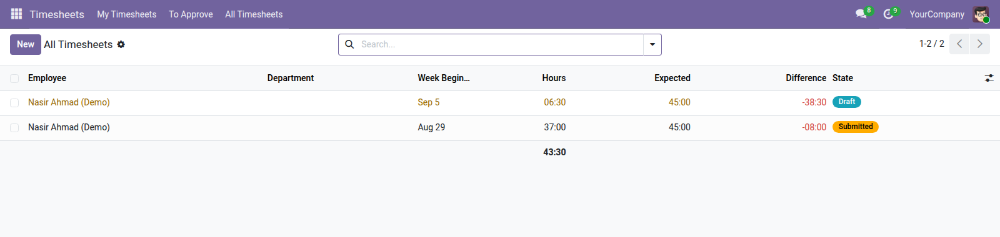

<section style="padding:32px 0;font-family:Roboto,Helvetica,Arial,sans-serif;color:#2b3a34;">
  <div style="max-width:900px;margin:0 auto;padding:0 24px;">

    <p style="font-size:12px;letter-spacing:.14em;text-transform:uppercase;color:#0b6b57;font-weight:600;margin:0 0 10px;">Human Resources</p>
    <h1 style="font-size:40px;line-height:1.1;margin:0 0 14px;font-weight:700;">Timesheets for Odoo Community</h1>
    <p style="font-size:19px;line-height:1.55;color:#4c5a55;max-width:640px;margin:0 0 28px;">Weekly timesheets that get submitted, approved, locked and printed — the layer Community is missing, built on the timesheet entries it already has.</p>

    <div style="background:#f6f7f5;border-left:3px solid #0b6b57;padding:18px 22px;margin:0 0 32px;font-size:16px;line-height:1.6;"><strong>Community records the hours. It has no concept of a week.</strong> <code>hr_timesheet</code> gives every employee an entry per piece of work. There is nothing to approve, nothing that locks once approved, and nothing to print and sign. That is Enterprise's Timesheets Grid.</div>

    <div style="margin:0 0 34px;">
      
      <div style="font-size:13px;color:#75837d;padding-top:8px;">A submitted week and one in progress, against expected hours</div>
    </div>

    <h2 style="font-size:24px;margin:0 0 16px;font-weight:600;">A window, not a second place to type</h2>
    <p style="font-size:16px;line-height:1.65;color:#4c5a55;margin:0 0 14px;">Entries stay ordinary analytic lines. A timesheet is a window onto the entries that fall inside its week, so every report, filter and export that already reads Odoo timesheets keeps working and nothing is entered twice.</p>
    <p style="font-size:16px;line-height:1.65;color:#4c5a55;margin:0 0 30px;">Time logged before anyone opened a timesheet is adopted by the week it was worked in. Move an entry to another date and it moves to the right week with it, instead of quietly counting towards the wrong one.</p>

    <h2 style="font-size:24px;margin:0 0 16px;font-weight:600;">Approved means approved</h2>
    <table style="width:100%;border-collapse:collapse;margin:0 0 30px;font-size:15px;">
      <thead><tr style="background:#edf0ec;">
        <th style="text-align:left;padding:10px 14px;border-bottom:1px solid #dce1db;">State</th>
        <th style="text-align:left;padding:10px 14px;border-bottom:1px solid #dce1db;">Entries can be</th>
        <th style="text-align:left;padding:10px 14px;border-bottom:1px solid #dce1db;">Who moves it on</th>
      </tr></thead>
      <tbody>
        <tr><td style="padding:9px 14px;border-bottom:1px solid #eef1ed;">Draft</td><td style="padding:9px 14px;border-bottom:1px solid #eef1ed;">added, changed, deleted</td><td style="padding:9px 14px;border-bottom:1px solid #eef1ed;">the employee submits</td></tr>
        <tr><td style="padding:9px 14px;border-bottom:1px solid #eef1ed;">Submitted</td><td style="padding:9px 14px;border-bottom:1px solid #eef1ed;">nothing — locked</td><td style="padding:9px 14px;border-bottom:1px solid #eef1ed;">an approver approves or sends it back</td></tr>
        <tr><td style="padding:9px 14px;border-bottom:1px solid #eef1ed;">Approved</td><td style="padding:9px 14px;border-bottom:1px solid #eef1ed;">nothing — locked</td><td style="padding:9px 14px;border-bottom:1px solid #eef1ed;">only cancelling the approval reopens it</td></tr>
        <tr><td style="padding:9px 14px;border-bottom:1px solid #eef1ed;">Rejected</td><td style="padding:9px 14px;border-bottom:1px solid #eef1ed;">added, changed, deleted</td><td style="padding:9px 14px;border-bottom:1px solid #eef1ed;">the employee fixes it and resubmits</td></tr>
      </tbody>
    </table>

    <h2 style="font-size:24px;margin:0 0 16px;font-weight:600;">Why the lock is the point</h2>
    <p style="font-size:16px;line-height:1.65;color:#4c5a55;margin:0 0 14px;">An approved statement of hours that can still be edited underneath the approver is not an approval. It is the failure that makes people stop trusting the numbers — and it is usually discovered by payroll, a month later, on a figure somebody has already been paid against.</p>
    <p style="font-size:16px;line-height:1.65;color:#4c5a55;margin:0 0 30px;">Adding a new entry to a submitted week is refused too, which is the obvious way round a lock that only guards the entries already there.</p>

    <h2 style="font-size:24px;margin:0 0 16px;font-weight:600;">Who approves it is configuration</h2>
    <p style="font-size:16px;line-height:1.65;color:#4c5a55;margin:0 0 30px;">Routing comes from <strong>Approval Workflows</strong>, so a timesheet can go to the line manager, or the project manager, or both above a certain number of hours — without a developer. Approvers can be resolved from the sheet itself, so the employee's own manager is found rather than named, and the process survives people changing roles.</p>

    <h2 style="font-size:24px;margin:0 0 16px;font-weight:600;">Also included</h2>
    <ul style="font-size:16px;line-height:1.7;color:#4c5a55;margin:0 0 30px;padding-left:20px;">
      <li><strong>A week that starts on Saturday</strong> — the Afghan working week, and a setting for everywhere else</li>
      <li><strong>Expected hours from the employee's own calendar</strong> — summed from their real attendances, so four nine-hour days is not confused with five seven-hour ones</li>
      <li><strong>The difference, searchable</strong> — a filter for weeks that came in short, before payroll asks</li>
      <li><strong>A printed weekly grid</strong> — projects down, days across, totals both ways, and two signature lines</li>
    </ul>

    <div style="border-top:1px solid #dce1db;padding-top:20px;font-size:14px;color:#75837d;">Odoo 19.0 Community · depends on <code>hr_timesheet</code> and <code>hm_approvals</code>. Entries remain <code>account.analytic.line</code> records.</div>

  </div>
</section>
